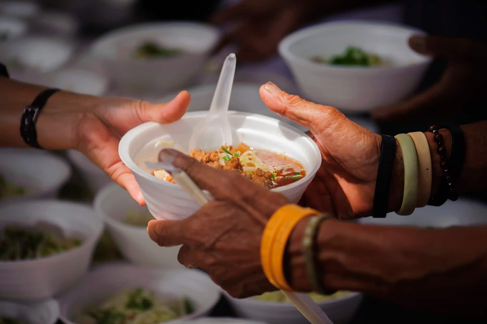

Building Stronger futures Together
The Sanni-Thomas Foundation is dedicated to transforming lives in underserved communities across Lagos, Nigeria through sustainable programs in Food, Health, Education, Employment
The Sanni-Thomas Foundation is dedicated to transforming lives in underserved communities across Lagos, Nigeria through sustainable programs in Food, Health, Education, Employment
The Sanni-Thomas Foundation is a community-focused nonprofit organization based in Lagos, Nigeria. Our goal is to empower underserved communities by addressing critical needs in the areas of Food, Healthcare, Education, Employment, and Sponsorship. Guided by compassion, integrity, and a commitment to sustainability, we work closely with local communities to design programs that are practical, effective, and owned by the people they serve. Rather than spreading ourselves thin, we take deliberate steps, focusing deeply on one area at a time to build strong foundations before expanding.

We operate with a clear and holistic framework called FHEES as a pillar, which stands for;

Providing nutritional support and working towards food security for vulnerable families and communities.

Organizing medical outreach and access to health sensitization for better well-being of the communities
Supporting access to quality education, academic sponsorships, and lifelong learning opportunities. Employment.

Equipping individuals with vocational skills, training, and pathways to sustainable livelihoods and employment.